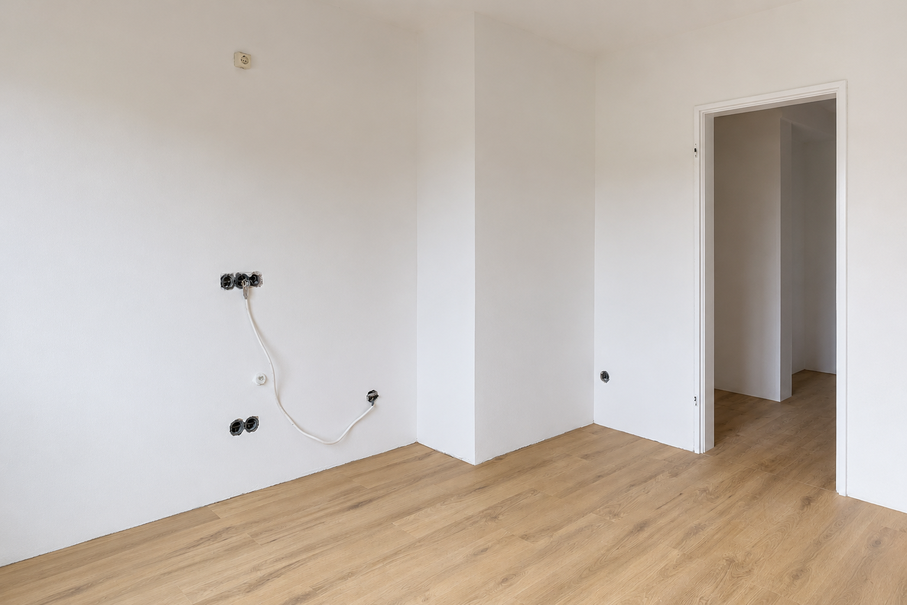
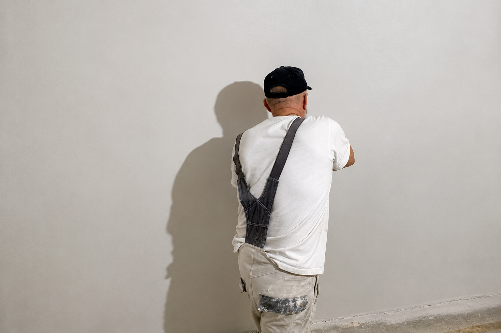

Проєкт
Медіа
Фотографії, відео та матеріали з виконаних робіт, технічних проєктів і реалізованих ідей.
Архів
Фото, відео та матеріали з наших робіт.




Про матеріали
Тут ми публікуємо матеріали з реальних робіт, технічних рішень, процесу виконання та готових результатів.
Фото і відео допомагають показати не лише кінцевий результат, а й сам процес створення проєкту.
Новий проєкт
Зв'яжіться з нами, якщо хочете обговорити співпрацю або новий проєкт.